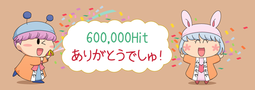
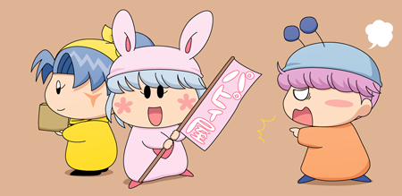

「わがまま☆フェアリー ミルモでポン！」ファンサイト、『ムルモ屋本舗』へようこそ！
みんなでミルモでポン！を応援しましょう！(^^)

１０月６日 600,000Hit達成しました！
これからもよろしくお願いいたしますm(_ _)m
企画15『妖精にバイトをさせてみよう』
掲示板にて開催中♪
皆さんの楽しい投稿をお待ちしています(^^)。
『わがまま☆フェアリー ミルモでポン！』 再放送情報
・TOKYO MXにて、毎週日曜日朝６：００〜６：３０に放送中
（２年目「ごおるでん」シリーズを再放送中）
・ディズニーチャンネルにて、毎週土曜日と日曜日、
朝６：００〜６：３０に放送中
『ちび☆デビ！』 アニメ放送中！
毎週月曜日、NHK「大！天才てれびくん」番組内で放送中
（⇒アニメ『ちび☆デビ！』公式サイト）
今までの連載もの

ヤシチ＆ハンゾー(1) 【お題05】
ハンゾー「兄貴が貸してくれると思って着てこなかったのら」
サスケ＆カメリ＆ミオリ(1)
サスケ「知らない人と話しちゃいけないんだぜ」
アクミ＆ミレン(3) 【お題04】
ミレン「恋人のボクに一言も相談しないなんてひどいよ〜〜〜っ」
アロマ＆ポーロ(2) 【お題03】
ポーロ「大丈夫？アロマちゃん」



「ムルモ屋本舗」はリンクフリーです。
<img src="http://www.murumoya.com/banner.gif">
○このサイトは原作者、出版社およびアニメ制作会社との関連はございません。
○このサイトに掲載の画像、文書の無断転載を禁止します。
○Microsoft Internet Explore 9.0で動作確認しています。
○お問い合わせは管理人こやまるまで（フォームメール）。
（開設日：2004年1月4日）